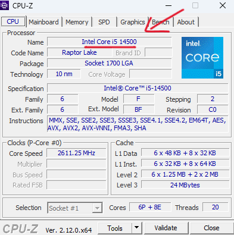
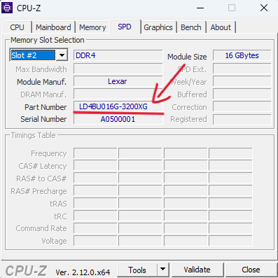
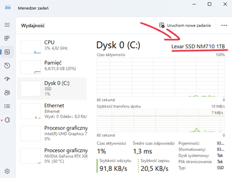
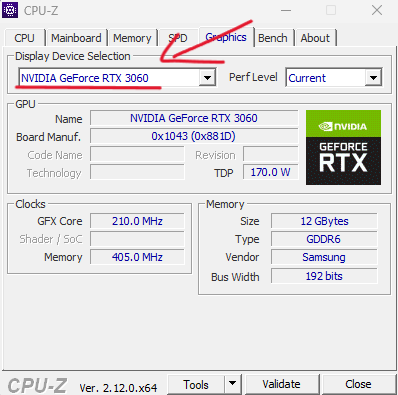
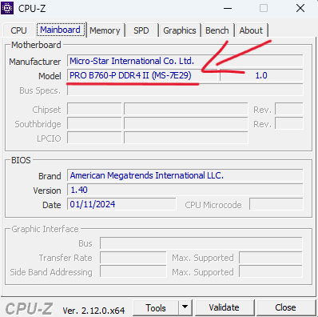
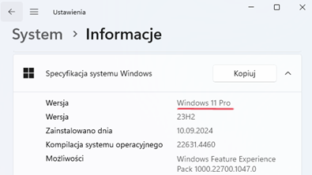
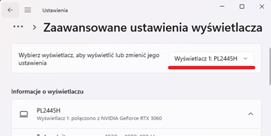

Można użyć programu CPU-Z do uzyskania informacji o podstawowych komponentach komputera.
Niektóre informacje o komponentach można uzyskać poprzez "Ustawienia" systemu, jednak w niektórych przypadkach konieczne jest fizyczne sprawdzenie urządzenia.
CPU
RAM
Dysk twardy
Karta graficzna
Płyta główna
System
Monitor
Zasilacz, Obudowa, Mysz, Klawiatura
Nie ma możliwości uzyskania tej informacji bezpośrednio z systemu Windows. Aby dowiedzieć się, konieczne jest fizyczne sprawdzenie urządzenia.

Procesor
Intel Core i5 14500
1179zł
Pamięć RAM
Lexar 32GB 3200MHz (2x16GB)
269zł
Dysk Twardy
Lexar SSD NM710 1TB
279zł
Karta graficzna
NVIDIA Geforce RTX 3060
1359złPłyta główna
MSI PRO B760-P DDR4 II
690złZasilacz
Be Quiet System Power 10 850w
449złObudowa
Ventum 200 Solid
219złMysz
Logitech M-U0026
34zł
Klawiatura
Logitech K120
59złMonitor
iiyama G-Master G2445HSU
389złSystem
Windows 11 Pro
749zł
Cena aktualnego komputera wynosi: zł
Decyzja o modernizacji komputera lub zakupie nowego zależy od kilku kluczowych czynników. Jeśli Twój obecny sprzęt jest stosunkowo nowy i wciąż spełnia Twoje potrzeby, warto rozważyć ulepszenie najważniejszych podzespołów, takich jak pamięć RAM, dysk SSD czy karta graficzna. Taki krok może być opłacalny i wydłuży żywotność komputera.
Z kolei w przypadku starszego sprzętu, który nie wspiera nowszych technologii, lub jeśli planujesz korzystać z komputera w bardziej wymagający sposób, np. do gier czy profesjonalnych zastosowań, zakup nowego urządzenia może być lepszym wyborem. Nowy komputer nie tylko zapewni większą wydajność, ale również lepszą kompatybilność z przyszłymi technologiami i większy potencjał do rozbudowy.
Kluczową rolę odgrywa tutaj także budżet. Modernizacja często jest tańsza, ale jeśli wymaga wymiany wielu komponentów, koszt może zbliżyć się do ceny nowego komputera. Dlatego decyzję warto podjąć po dokładnej analizie stanu technicznego obecnego sprzętu, kosztów modernizacji i Twoich indywidualnych potrzeb.
Na podstawie aktualnej konfiguracji zaleca się modernizacja.
Procesor: Intel Core i7-14700 oferuje wyższą wydajność w porównaniu z i5-14500, dzięki większej liczbie rdzeni i wyższym częstotliwościom taktowania. Zapewnia to lepszą obsługę wymagających aplikacji i gier.
+zł
Karta graficzna: RTX 4080 oferuje znaczący wzrost wydajności w porównaniu z RTX 3060, umożliwiając grę w najwyższych ustawieniach graficznych oraz lepszą obsługę technologii ray tracing.
+zł
Płyta główna: MSI PRO Z790-P DDR4 aby w pełni wykorzystać możliwości nowego procesora, konieczna jest wymiana płyty głównej na model z chipsetem Z790, który zapewnia lepszą obsługę podkręcania oraz dodatkowe funkcje.
+zł
Zasilacz: Be Quiet! Straight Power 11 1000W 80 Plus Gold - nowe komponenty, zwłaszcza karta graficzna, wymagają większej mocy zasilania. Ten zasilacz zapewni stabilne i efektywne zasilanie całego systemu.
+zł
Dysk SSD: Samsung 980 Pro 2TB NVMe M.2 dodanie szybszego i pojemniejszego dysku SSD zwiększy przestrzeń na dane oraz przyspieszy ładowanie systemu i aplikacji
+zł
Pamięć RAM: Lexar 64GB 3200MHz (+2x16GB) zwiększenie pamięci RAM do 64 GB pozwoli na płynniejszą pracę w aplikacjach wymagających dużej ilości pamięci, takich jak edycja wideo czy praca z wirtualnymi maszynami.
+zł
Koszt modernizacji: zł
Procesor
Jest sercem komputera, odpowiedzialnym za wykonywanie obliczeń i zarządzanie zadaniami. Interpretuje i wykonuje instrukcje z programów
Pamięć RAM
Służy jako pamięć tymczasowa, w której przechowywane są dane i instrukcje wykorzystywane przez procesor podczas działania programów
Dysk Twardy
Przechowywanie danych, systemu operacyjnego i programów
Karta graficzna
Odpowiada za renderowanie grafiki i obrazów. Używana głównie w grach, projektowaniu graficznym, czy obliczeniach wymagających dużej mocy obliczeniowej.
Płyta główna
Łączy wszystkie podzespoły komputera i umożliwia ich komunikację. Posiada złącza do procesora, pamięci RAM, karty graficznej, dysków twardych, itp.
Zasilacz
Dostarcza energię elektryczną do wszystkich podzespołów komputera, przekształcając prąd z gniazdka w odpowiednie napięcie
| Procesor | Intel Core i7-14700 | Intel Core i5 14500 | Wzrost wydajności |
|---|---|---|---|
| Liczba rdzeni/wątków | 14 rdzeni / 20 wątków | 20 rdzeni / 28 wątków | +42,9% rdzeni / +40% wątków |
| Taktowanie bazowe | 2,6 GHz | 2,1 GHz | -19,2% |
| Taktowanie turbo | do 5,0 GHz | do 5,4 GHz | +8% |
| Pamięć cache L3 | 24 MB | 33 MB | +37,5% |
| Karta graficzna | NVIDIA GeForce RTX 3060 | NVIDIA GeForce RTX 4080 | Wzrost wydajności |
|---|---|---|---|
| Pamięć | 12 GB GDDR6 | 16 GB GDDR6 | +33,3% |
| CUDA Cores | 3584 | 9728 | +171,5% |
| Taktowanie bazowe | 1,32 GHz | 2,21 GHz | +67,4% |
| Taktowanie boost | 1,78 GHz | 2,51 GHz | +41% |
| Przepustowość pamięci | 360 GB/s | 716,8 GB/s | +99,1% |
| TDP | 170 W | 320 W | +88,2% |
| Dysk | Lexar SSD NM710 1 TB | Samsung 980 Pro 2 TB | Wzrost wydajności |
|---|---|---|---|
| Pojemność | 1 TB | 2 TB | +100% |
| CUDA Cores | 3584 | 9728 | +171,5% |
| Prędkość odczytu | do 3500 MB/s | do 7000 MB/s | +100% |
| Prędkość zapisu | do 3000 MB/s | do 5000 MB/s | +66,7% |